How accurate is a power forecast driven by ECMWF ENS at each horizon?
This study uses only Flexpectation's own data, and its purpose is to inform Flexpectation's choices. The study scores the ensemble forecast of the European Centre for Medium-Range Weather Forecasts (ECMWF) only at the generators in Flexpectation's trial area in Lincolnshire. The study does not compare results across many regions or climates, so a result on this page may not hold elsewhere.
At 6 solar farms and 3 wind farms in Lincolnshire, an XGBoost model given the ECMWF ensemble's mean forecast beats every forecast that reads no weather forecast out to day 5 for solar and day 7 for wind. From day 7 for solar and from day 10 for wind it is no longer statistically significantly better than climatology at the main setting, and by day 14 climatology is ahead. The solar day-7 and day-14 results depend on the row set (see Limitations). In a post hoc check, at day 14 the ensemble mean adds no statistically significant skill over the same model given no weather at all. ENS is built to forecast a probability distribution, and this page scores only point forecasts made from it, so the day-14 result says nothing about the skill of ENS's spread. ENS is ECMWF's ensemble forecast: one control run from ECMWF's unperturbed analysis of the current weather, run at about 9 km, and 50 runs started from perturbed initial conditions and run with stochastically perturbed model physics. The live service reads its 00 UTC run each day. Every error on this page is a mean absolute error as a percentage of each generator's capacity, taken as its 99th percentile of measured output rather than its nameplate rating; a difference between two errors is in percentage points of capacity, written "points"; and a bracketed pair after a figure is its 95% interval. At day 1, the day after the run, the ensemble mean gives an error of 8.80% [8.32, 9.27] for solar and 8.23% [7.45, 9.15] for wind. The error grows with every day of horizon: by day 7 it is 14.33% [13.40, 15.27] for solar and 16.76% [15.18, 18.53] for wind. At day 7 the best forecast that reads no weather forecast is climatology, each generator's typical output for the month and hour, at 14.50% [13.55, 15.49] for solar and 17.90% [16.09, 19.86] for wind; at days 0 to 3 for wind it is smart persistence. By day 14, climatology beats the ensemble mean by 0.72 points [0.15, 1.22] for solar and 1.24 points [0.56, 1.93] for wind. See "Where ENS stops beating the no-weather baselines" for the calendar-only check behind that last claim. The evidence is 50,643 generator-hours of solar from April 2024 to September 2026 and 43,089 generator-hours of wind from December 2024 to September 2026.
Of three ways of using the ensemble, feeding the mean of its members to the XGBoost model does best at almost every horizon, as expected of an ensemble mean scored by mean absolute error. It beats the control member, the one run started from ECMWF's unperturbed analysis of the current weather, and it beats training one XGBoost model on every member and averaging its 51 forecasts. Every ENS input is first turned from ENS's 3- and 6-hourly steps into hourly values. For solar, rebuilding the radiation through the clear-sky index lowers the error by 0.30 points [0.22, 0.40] at day 1 against the straight-line interpolation the live service uses today. For wind, no way of interpolating tested moves the error by more than 0.06 points to day 7.
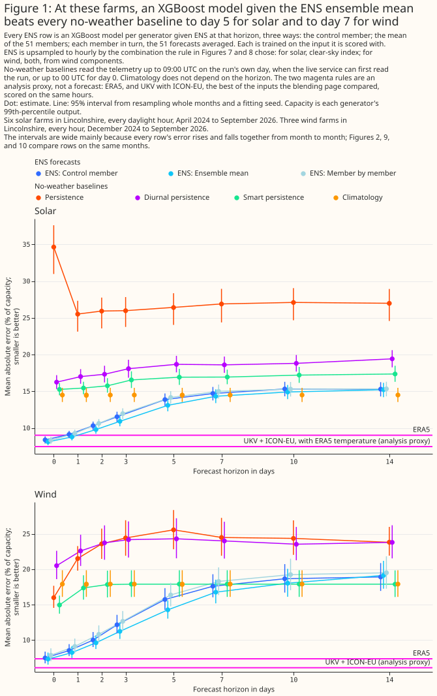
Figure 1 draws each forecast's own error at each horizon; Figure 2 tests each horizon against day 0 directly. Figure 1's intervals are wide mainly because every forecast's error rises and falls together from month to month. Figure 2 compares two XGBoost models on the same months and the same fitting seed, which cancels that shared swing, so its intervals are much narrower. Two points can therefore overlap in Figure 1 and still differ by a margin statistically significant at the 5% level in Figure 2.
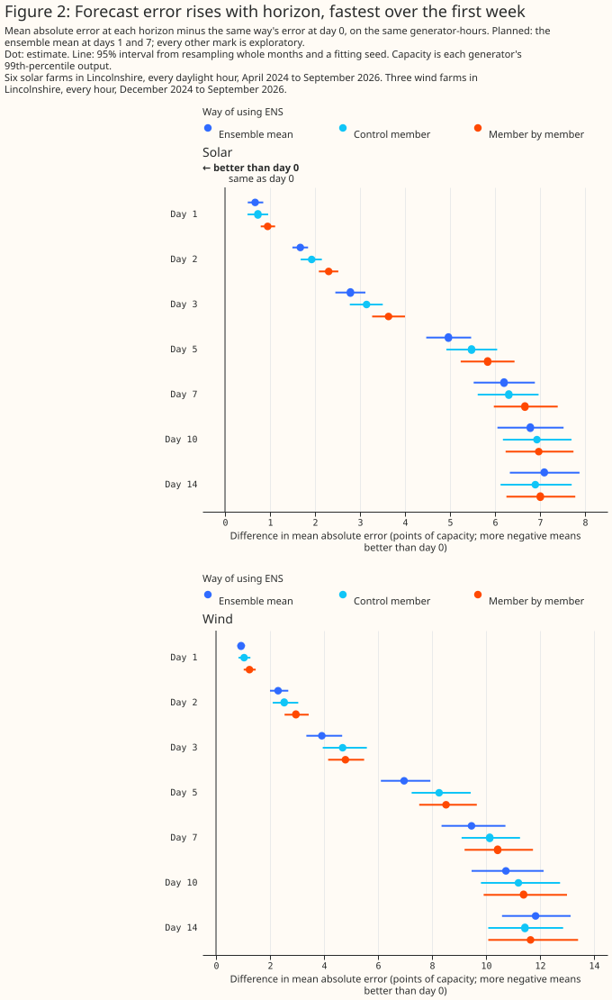
How this page was made. The research question came from a human. Everything else — the code behind every result, the analysis, the figures, and the text — was written by Claude, Anthropic's AI model (for this page, Claude Opus 5.5 and Claude Sonnet 5, reusing data-preparation and model-fitting code that Claude Opus 5 and Claude Sonnet 5 wrote for the earlier weather-product studies). Several independent Claude reviewers have checked the method, the evidence, and the prose adversarially.
Key findings
A difference between two errors is in percentage points of capacity, written "points". Where one forecast "beats" another, the difference is statistically significant at the 5% level.
- The XGBoost models follow the measured output at every generator at day 1; at day 7 they stay close to an average day.
- Rebuilding solar radiation through the clear-sky index beats straight-line interpolation at every horizon to day 3; for wind, the way of interpolating makes no material difference to day 7.
- Error rises with horizon: from day 0 to day 1 by 0.67 points [0.51, 0.85] for solar and 0.93 points [0.79, 1.08] for wind, and to day 7 by 6.20 points [5.53, 6.89] and 9.46 points [8.35, 10.72].
- The ensemble mean beats the control member, and beats training on every member and averaging the forecasts, at almost every horizon.
- The ensemble mean beats the best no-weather baseline to day 5 for solar and to day 7 for wind (for solar, at the main setting); by day 14 climatology is ahead. In a post hoc check, part of that ground is how the XGBoost model uses its calendar columns; the rest is consistent with ENS adding little skill at that lead.
- At day 1 the ensemble mean is level with ERA5 for solar and loses to it for wind, and loses to UKV with ICON-EU, the best of the inputs the blending page compared.
Introduction
Every weather product this project has compared so far was scored as a description of weather that had already happened, which is not the question the live service faces. The live service forecasts power days ahead, from a forecast of the weather. Issue #810 asks which weather model gives the best power forecast at the horizons the live service runs at. This page is the first, deliberately small step of that question: it measures how accurate a power forecast driven by ENS, the forecast the live service already reads, is at each horizon, before any other forecast product is added.
Three groups of forecasts are compared at each horizon, and two reference rows show how good the weather input could be.
- ENS, three ways: the control member alone; the mean of the 51 members' weather; and each member through one XGBoost model, the 51 power forecasts then averaged.
- No-weather baselines: persistence, diurnal persistence, smart persistence, and climatology, defined under "Data and methods".
- References, an analysis proxy for the weather rather than a genuine multi-day-ahead forecast: ERA5, ECMWF's reanalysis of past weather, available about 5 days late; and UKV with ICON-EU, each with its neighbouring hours, the best of the inputs the blending page compared. For solar, both reference rows are also given ERA5's air temperature, as on the past-weather pages, so the solar UKV-and-ICON-EU row as scored could not be read until ERA5 is about 5 days late.
| Input | What it is | Grid | Steps | When it can be read |
|---|---|---|---|---|
| ENS | ECMWF's 51-member ensemble forecast, 00 UTC run, from ECMWF's open data as archived by Dynamical.org | run at about 9 km; the open data is served at 0.25°, averaged here over each generator's H3 cell (about 250 km²) | 3-hourly to 144 hours ahead, 6-hourly to 360 hours in the open data | about 09:00 UTC on the run's day, from Dynamical.org's archive |
| ERA5 | ECMWF reanalysis | about 31 km | hourly | about 5 days after the hour |
| UKV and ICON-EU | Met Office model for the UK and German weather service (DWD) model for Europe, as Open-Meteo's archive serves them; for solar, with ERA5's air temperature | UKV 1.5 km over the UK, coarsening to 4 km at the domain's edges, served at 2 km; ICON-EU 6.5 km, served at about 7 km | hourly; UKV the T+0 analysis, ICON-EU forecasts 1 to 3 hours old | within hours of the hour for UKV and ICON-EU; about 5 days for the ERA5 temperature |
Data and methods
The hours scored
Every comparison is scored at hourly resolution, on the hours the past-weather studies scored: every daylight hour at 6 solar farms, labelled A to F, and every hour at 3 wind farms, labelled W1 to W3. Hours with an exactly-zero half-hour, the commissioning ramp of one solar farm, and outages are dropped as on the solar page and the wind page. An hour is also dropped from every forecast where any horizon's ENS input or any baseline's input is missing, so every row of a panel is scored on the same hours. That leaves 50,643 of 54,791 solar hours, from 15 April 2024 to 10 September 2026, and 43,089 of 43,555 wind hours, from 1 December 2024 to 10 September 2026. The ENS archive starts on 1 April 2024, and day 14 needs a run 14 days before the day it forecasts. Wind starts on 1 December 2024, three weeks after ECMWF's Cycle 49r1 upgrade of 12 November 2024, so that no wind fit trains on one version of the ensemble before Cycle 49r1 and is scored on another after it. Solar keeps every row. An era cut at Cycle 49r1 on all solar rows gives the same day-7 and day-14 results as no cut (see Limitations).
Horizons and issue time
A horizon is a whole UTC day after the run's own day: day d forecasts a calendar day from the 00 UTC run d days earlier. The horizons scored are days 0, 1, 2, 3, 5, 7, 10, and 14: every day to day 3, then days 5, 7, and 10, which span the 3-to-10-day band the roadmap names as the live service's primary band, and day 14, near the end of the run. The live service reads a 00 UTC run from about 09:00 UTC, so day 1, the day-ahead product, is 15 to 39 hours after the forecast is issued. Most of day 0 is over before the run can be read, so day 0 is a best case, not a product the live service can deliver.
Turning ENS's steps into hourly values
ENS's radiation reaches this study as a mean over each 3- or 6-hour step, and its wind as a value at each step, so every ENS input is first upsampled to hourly values. ECMWF publishes the radiation as an accumulation since the run's start, which Dynamical.org converts to step means. NWP variable conventions sets out why a straight line between steps misreads a period mean. Each member is upsampled before any is averaged. The techniques tested are straight-line interpolation of every field, which is what the live service does today; for solar radiation, the clear-sky-index resample that page describes, with and without scaling each step's hours to keep the step's mean; a shape-preserving curve for temperature; and for wind, the speed or the direction, or both, taken from interpolated eastward and northward components. A rule written before any result chose the combination every later comparison uses: starting from straight lines, try one change at a time, and keep it only if it lowers the ensemble-mean model's error at both day 1 and day 7. The rule chose the clear-sky index for solar radiation, straight lines for solar temperature, and the components for both wind direction and wind speed.
The forecasts
Each forecast is an XGBoost model fitted per generator and per horizon, trained on the input it is
scored with, with fixed hyperparameters (depth 6, learning rate 0.05, 500 rounds, no early stopping,
row subsampling 0.8, no column subsampling) that were not tuned.
A solar model is given the hour's sun position, the time of day, the day of the year, which side of
the Met Office's January 2026 upgrade of UKV the hour falls on, and ENS's radiation and air
temperature. A wind model is given the time of day, the day of the year, the same upgrade flag, and
ENS's 100 m wind speed, its direction as a sine and a cosine, and its 10 m wind speed. The UKV-upgrade
flag carries no information for ENS, which never reads UKV; every forecast gets the flag because the
folds are cut by era to match the past-weather pages, and 8 of the 30 solar months and 8 of the 22
wind months sit after the upgrade. The flag is a nuisance column for every ENS forecast and for
calendar_only, the no-weather XGBoost model defined under "Where ENS stops beating the no-weather
baselines", so the comparison between the
ensemble mean and calendar_only is like-for-like; the comparison between either of them and
climatology, which reads no such flag, is not.
- Control member: trained and scored on the control member.
- Ensemble mean: trained and scored on the mean of the 51 members' weather. The mean wind direction is the direction of the mean wind vector.
- Member by member: one XGBoost model trained on every member's hours, each member's hour weighted 1/51 so that an hour counts once, then applied to each member; the 51 power forecasts are averaged. Their median is reported as well.
- Exploratory: trained on the mean, applied to each member. An XGBoost model trained on the ensemble mean, applied to each member, its 51 forecasts averaged. It breaks the rule of training on the input scored.
Persistence and diurnal persistence read only the telemetry up to the forecast's issue time: 09:00 UTC on the run's day, or the run's 00 UTC start for day 0, whose day would otherwise hand the baseline the morning it forecasts. The telemetry is taken as available at once, the best case for persistence. Climatology, and the weight smart persistence blends towards climatology, are fitted on the training folds, which include months after the forecast's own issue time — the same out-of-fold scheme every XGBoost arm on this page uses, not a live-service constraint.
- Persistence: the last observed hour's output, held for every hour forecast.
- Diurnal persistence: the output at the same time of day on the last whole day before the issue.
- Smart persistence: for solar, the clear-sky index of the last 24 observed hours times the clear-sky irradiance at the hour forecast; for wind, persistence blended with climatology, the weight fitted per generator and horizon on the training months.
- Climatology: each generator's median output for the calendar month and hour of day, over the training months only, falling back to the median of the two neighbouring calendar months where the training folds hold no row for that generator, month, and hour, and to the generator's whole-year median at that hour where even that is empty. The median, because the error is a mean absolute error, which the median minimises.
Folds, intervals, and planned contrasts
Each model is trained on some blocks of whole months and scored on the others, fitted three times from three fitting seeds. The five blocks, called folds, are cut separately before and after the UKV upgrade, so that the references are fitted as on the past-weather pages, and the fold numbers of the hours after the upgrade are then shifted (by 2 for wind and by 3 for solar). Without the shift, a calendar month can be held out in both eras at once and have no training row, which would make every model's forecast for that month an extrapolation. With the shift, every calendar month that occurs in two or more years has training rows whenever it is scored. The 3,783 wind generator-hours and 190 solar generator-hours whose calendar month occurs in one year only cannot be covered by any fold design, and stay scored. Hours the network operator curtailed are left out of training and kept for scoring, with the forecast held to the export cap then in force. Each error is divided by its own generator's capacity, its 99th percentile of output.
Each 95% interval comes from resampling whole calendar months, each time also drawing one of the three fitting seeds. A difference is statistically significant at the 5% level when its interval lies wholly on one side of zero. The test covers month-to-month weather and the fitting seed, not differences between generators.
Five contrasts were planned, written into the study code before any result existed: the ensemble mean at day 1 and at day 7, each against day 0; member by member against the ensemble mean at day 1; the ensemble mean against the control member at day 1; and the ensemble mean at day 7 against climatology. Every other figure is exploratory, and among many exploratory figures about 1 in 20 reaches significance at the 5% level by chance. The planned contrasts are also run with a second, shallower XGBoost setting.
Results
The XGBoost models work
Given the day-1 ensemble mean, the XGBoost model follows the day-to-day swings in measured output at every generator. Figures 3 and 4 plot out-of-fold forecasts against measured output through one week each, chosen from measured output alone: for solar the week, in February 2025, whose daily output varies most, for wind the week, in September 2025, with the largest hour-to-hour changes. At day 7 the solar forecast stays close to an average day, too high on dull days and too low on bright ones, and the wind forecast mostly misses the swings.
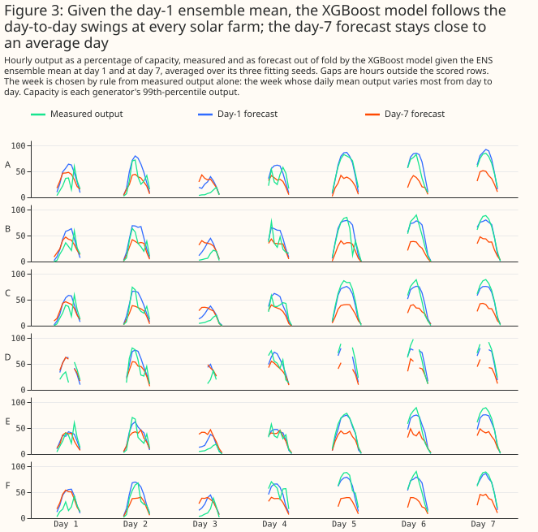
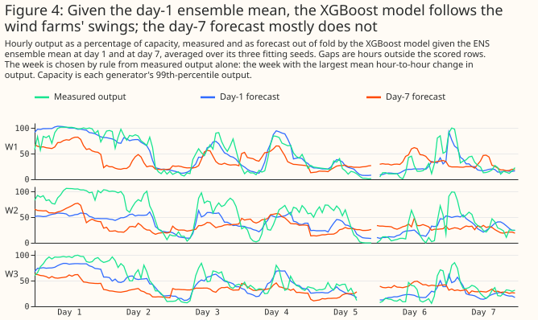
Every generator's error rises between day 1 and day 7 (Figure 5).
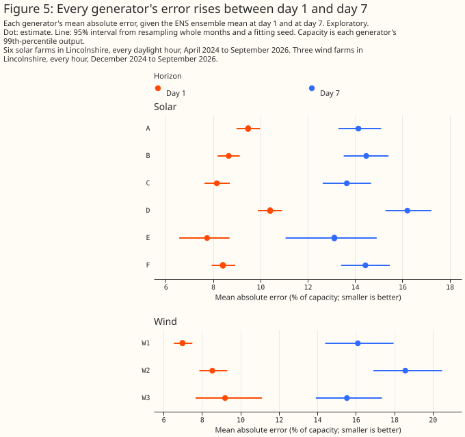
Turning ENS's steps into hourly values
For solar, the clear-sky index keeps the shape of the day where a straight line between steps shifts it late and flattens it. Figure 6a shows one solar day, in April 2025, at day 1 and day 7.
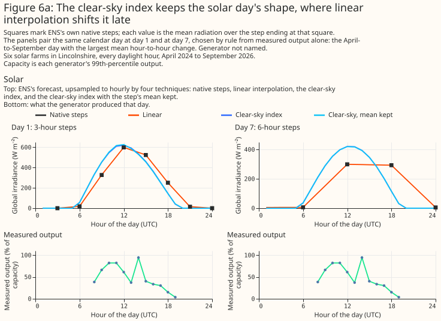
For wind, every upsampling technique reproduces the day's swings almost identically. Figure 6b shows one wind day, in September 2025, at day 1 and day 7.
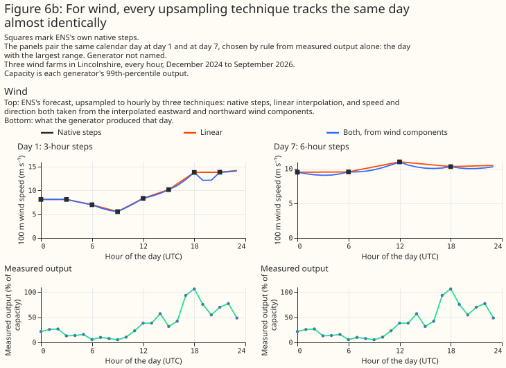
Rebuilding solar radiation through the clear-sky index lowers the error at every horizon from day 0 to day 3 and at day 10: by 0.30 points [0.22, 0.40] at day 1, 0.18 points [0.08, 0.30] at day 3, and 0.12 points [0.03, 0.21] at day 10. At days 5 and 7 the gain is 0.11 points [−0.01, 0.23] and 0.09 points [−0.05, 0.24], not statistically significant at the 5% level, and at day 14 it is nil. Keeping each step's mean exactly adds nothing: it raises the error by 0.03 points [0.00, 0.06] at day 1, not statistically significant. The shape-preserving curve for temperature moves the error by less than 0.02 points at every horizon, and the rule did not adopt it.
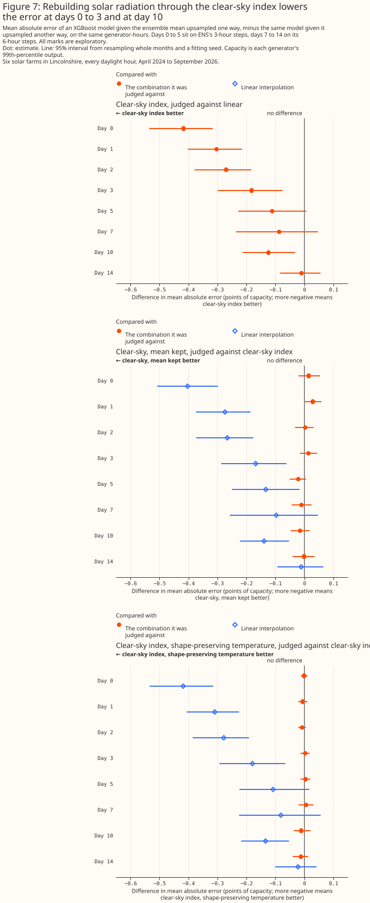
For wind, no technique's estimate moves the error by as much as a tenth of a point at any horizon to day 5, and the two changes the rule adopted lower it by 0.06 points or less at day 7. Taking the direction from interpolated components lowers the error by 0.009 points [−0.033, +0.013] at day 1 and 0.008 points [−0.106, +0.090] at day 7. Taking the speed from components as well moves the error by −0.008 points [−0.042, +0.023] at day 1 and −0.052 points [−0.132, +0.019] at day 7. The rule adopted both because each change happened to point the same way at days 1 and 7, not because either was a statistically significant gain. At day 10 the adopted combination raises the error by 0.12 points [0.01, 0.25] against straight-line interpolation, statistically significant, and at day 14 by 0.15 points [−0.03, 0.34], not significant. The rule tests only days 1 and 7, so the choice was not checked beyond day 7.
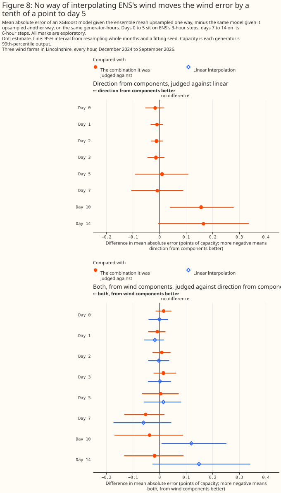
ENS scored on its own steps is a reference, not a rival, because it is scored on different rows. Scored on its own 3-hour steps, the day-1 ensemble mean gives 6.87% [6.36, 7.39] for solar and 8.20% [7.44, 9.12] for wind. A 3-hour mean of solar power is easier to forecast than one hour of it, and the wind rows are only the hours at ENS's stamps, so these figures cannot be set against the hourly ones.
Giving day 1 only every other step raises the error by 0.23 points [0.17, 0.28] for solar and 0.26 points [0.16, 0.34] for wind. This emulates the 6-hour steps the open-data ENS product carries beyond 144 hours, so part of the rise from day 5 to day 7 may be the coarser step rather than the longer horizon; the coarser step's own effect at day 7 is not measured.
Error grows with horizon
The ensemble mean's error rises with every day of horizon, most steeply over the first week. From day 0 to day 1 it rises by 0.67 points [0.51, 0.85] for solar and 0.93 points [0.79, 1.08] for wind, and from day 0 to day 7 by 6.20 points [5.53, 6.89] and 9.46 points [8.35, 10.72], all four planned. By day 14 the solar error is 15.22% [14.21, 16.16] and the wind error 19.14% [17.25, 21.19]. The second XGBoost setting gives the same picture.
The ensemble mean is the best of the three ways tested
The ensemble mean beats the control member at every horizon to day 10 for solar and to day 7 for wind. Training on every member loses to the ensemble mean at every horizon to day 10, and to the control member at days 1 to 7 for solar and days 0 to 10 for wind. At day 1, the ensemble mean beats the control member by 0.33 points [0.23, 0.44] for solar and 0.28 points [0.16, 0.40] for wind, and member by member loses to the ensemble mean by 0.48 points [0.35, 0.62] and 0.86 points [0.57, 1.18], all planned.
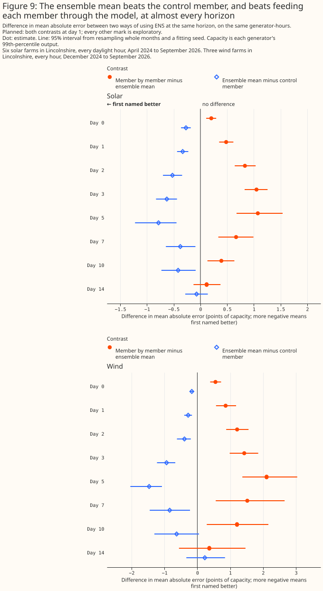
Training on every member makes the XGBoost model's response to the weather flatter at day 1, which is why member by member loses there. This page does not establish why member by member also loses from day 5 to day 10, where the loss is larger for wind but not for solar. At day 1, each member's weather is a noisier guess at the hour than the mean, and a model trained on noisy inputs learns to respond less to them: regressing the measured output's own anomaly against a climatology forecast onto each arm's forecast anomaly gives a slope of 1.11 for member by member against 0.92 for the ensemble mean at day 1 for solar, and 1.20 against 0.97 for wind — member by member is the flatter forecast, moving less than the truth on average, where the ensemble mean moves slightly further. The forecast anomaly's own spread points the same way: 13.8 points against 16.8 for solar, and 17.3 against 21.6 for wind, member by member narrower than the mean in both, and the flatter response holds through day 3 for solar and day 5 for wind. The loss survives turning off row subsampling, which drops member rows rather than hours: 0.49 points [0.36, 0.63] for solar and 0.86 points [0.56, 1.19] for wind at day 1. By day 10 member by member responds little to differences between members' weather — for solar, the 51 forecasts' own standard deviation is down to 0.61 points at day 10 and 0.36 points at day 14, while its forecast-anomaly SD stays at 10.4 points, and for wind 13.0 points — yet it still beats the same model given no weather at all, by a small but statistically significant margin: 0.10 points [0.04, 0.15] for solar and 0.52 points [0.21, 0.90] for wind at day 10, evidence that even a flattened response still carries some weather information. Most of the variation left at that lead is more likely the day-of-year noise the calendar section finds than a response to the weather.
In an exploratory check, a model trained on the ensemble mean and applied to each member does no worse than the ensemble mean. For solar it is ahead at every horizon to day 10, by 0.07 points [0.03, 0.11] at day 1 and 0.30 points [0.14, 0.46] at day 10; for wind the difference is not statistically significant at the 5% level to day 10, and it is ahead at day 14 by 0.59 points [0.20, 1.00]. One way this edge may arise: at long lead, averaging the model's forecasts over the 51 members damps a forecast that over-reacts when scored on the mean alone. At day 14 for wind and day 10 for solar, regressing measured output's anomaly onto forecast anomaly gives a slope of 0.52 for the model trained on the mean and applied to each member, against 0.28 for the model trained and scored on the mean, for wind, and 0.53 against 0.41 for solar — the arm trained on the mean and applied to each member is the damped one, its slope closer to 1 and so closer to tracking the truth's own swings, where the arm trained and scored on the mean over-reacts more strongly, at a lead where both arms' response is already weak. This mechanism is possible, not tested. Training on the mean and applying to each member also breaks the rule of training on the input scored, so it is a lead rather than a result.
Where ENS stops beating the no-weather baselines
The ensemble mean beats the best no-weather baseline by 1.41 points [0.98, 1.90] at day 5 for solar and 3.64 points [2.60, 4.79] for wind, and by day 14 climatology is ahead. For solar the best baseline at every horizon is climatology; for wind it is climatology or smart persistence, which are within 0.1 points of each other from day 3. At day 7, the planned contrast against climatology favours the ensemble mean by 0.17 points [-0.23, 0.57] for solar, not statistically significant at the 5% level at the main setting and significant at the second (0.50 points [0.14, 0.85]), and by 1.14 points [0.32, 2.02] for wind (1.50 points [0.69, 2.40] at the second setting). At day 10 neither technology's difference is statistically significant, and at day 14 climatology is ahead by 0.72 points [0.15, 1.22] for solar and 1.24 points [0.56, 1.93] for wind. Persistence and diurnal persistence are worse than climatology at every horizon, except wind persistence at day 0. Solar persistence at day 0 holds the last reading before 00 UTC, which in Lincolnshire is always a night-time reading of about zero, so its day-0 error of 34.6% is the error of forecasting zero output all day.
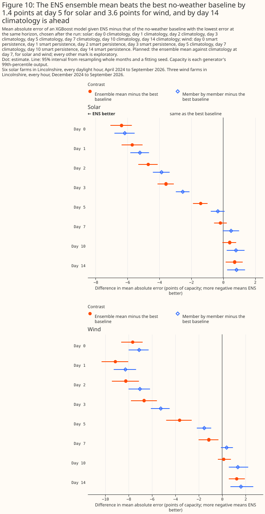
A post hoc check separates that crossover with climatology from ENS itself: given the same
non-weather columns and no weather at all, the same XGBoost model still loses to the ensemble mean at
every horizon to day 10. calendar_only is an XGBoost model shown exactly the columns every ENS
arm gets besides its weather — the hour of day, the day of the year, the UKV era, and, for solar, the
sun's position — fitted with the same folds, seeds, cap, and row set as every ENS arm. It is
markedly worse than climatology itself: 15.40% [14.37, 16.36] for solar and 19.76% [17.42, 22.24] for
wind, against climatology's 14.50% and 17.90%. The ensemble mean beats calendar_only by 1.07 points
[0.62, 1.49] for solar and 3.00 points [1.45, 4.85] for wind at day 7, and by 0.49 points [0.20, 0.74]
and 1.72 points [0.62, 2.96] at day 10, both statistically significant at the 5% level; by day 14 the
gap narrows to 0.18 points [-0.08, 0.45] for solar and 0.63 points [-0.40, 1.90] for wind, neither
statistically significant. At
day 14, comparing the ensemble mean directly with calendar_only is therefore not evidence either
way about whether ENS itself carries skill at that lead — the interval is wide enough to miss a real
difference, not narrow enough to rule one out.
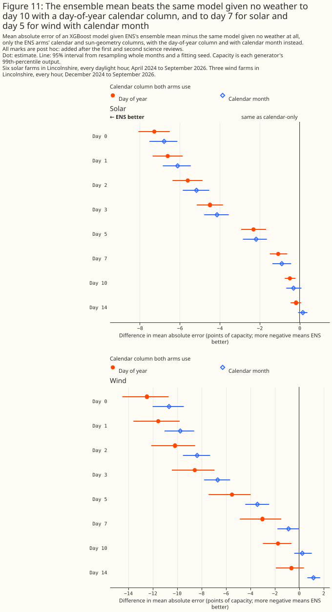
In a post hoc check, part of climatology's lead at day 14 comes from how the XGBoost model uses
its calendar columns; the rest is consistent with ENS adding little skill at that lead. Given no
weather, the model with day of year trails climatology by 0.90 points [0.29, 1.45] for solar and
1.86 points [0.86, 3.08] for wind, both statistically significant. With calendar month instead of
day of year, the no-weather model still trails climatology by 0.38 points [0.01, 0.76] for solar —
statistically significant, though only just — and is level with it for wind (0.01 points [−0.30,
0.39], not significant). The day-of-year model may do worse because it is fitted for 500 rounds with
no early stopping on about two years of hourly data, so a day-of-year column lets it fit day-to-day
noise that a month column, like a month-and-hour median, averages away. The page has not tested
this. Swapping the ensemble mean's own day-of-year column for calendar month moves its error by less
at short lead: calendar_only_month beats calendar_only by 0.52 points [0.14, 0.86] for solar and
1.85 points [0.87, 3.08] for wind, a bigger gain than swapping the same column brings the ensemble
mean at day 0 or day 1, though the ensemble mean gains 0.08 to 0.39 points from the swap at days 2
to 7 for solar. For wind the swap lowers the ensemble mean's error significantly at no horizon, and
at day 5 raises it by 0.23 points [0.05, 0.44]. Even with both arms on calendar month, the ensemble
mean stops beating the no-weather arm after day 7 for solar and after day 5 for wind: at day 14 it
is 0.16 points [-0.07, 0.39] behind for solar (not significant) and 1.18 points [0.68, 1.73] behind
for wind (statistically significant: with month controlled for, adding the day-14 ensemble mean
makes this XGBoost model's wind forecast worse, not better). Against climatology itself, the
month-based ensemble mean is also significantly behind at day 14: by 0.54 points [0.11, 0.98] for
solar and 1.19 points [0.57, 1.84] for wind. On this evidence, the ensemble mean carries no
statistically significant point-forecast skill at day 14 for either technology, and for wind it is
significantly worse than the no-weather model once the calendar feature is controlled for. Whether
ENS's probability distribution carries skill at that lead is a question this page does not test.
ENS against past weather
At day 1, the ensemble mean is 0.23 points ahead of ERA5 for solar [-0.02, 0.48], not statistically significant at the 5% level, and loses to it for wind by 0.89 points [0.69, 1.13]. For solar, grid, spatial sampling, and model version may be why ENS keeps pace with ERA5 despite the longer lead: ENS runs ECMWF's current model at about 9 km, read here from the 0.25° open data (about 17 by 28 km) averaged over each generator's H3 cell, where ERA5 is a reanalysis built on a 2016 model version (IFS Cycle 41r2) at about 31 km and read at a single grid cell. The day-0 control member, ENS's run from ECMWF's unperturbed analysis of the current weather, already beats ERA5 for solar by 0.63 points [0.42, 0.85] (8.40% against 9.02%), which a forecast-lead story alone would not predict. For wind the day-0 ensemble mean is level with ERA5 (0.04 points ahead [-0.11, 0.18], not significant) and the day-0 control member is 0.13 points behind [0.00, 0.27], also not significant, so the wind loss opens between day 0 and day 1. Forecast lead is consistent with that result: ERA5's wind is an hourly analysis, which assimilates observations of the hour it describes, while day 0 spans leads of 0 to 23 hours and day 1 leads of 24 to 47 hours. ERA5's radiation, by contrast, comes from forecasts 1 to 12 hours old, so lead does not favour ERA5 for solar by enough to explain the day-0 gap. The past-solar page's ENS section estimates, on its own rows at leads 5 to 20 hours, that ENS's extra 6.11 hours of mean lead over ERA5 raises ENS's error by about 0.16 points, so lead does favour ERA5 slightly.
UKV with ICON-EU, the best of the inputs the blending page compared, beats the day-1 ensemble mean by 1.33 points [1.09, 1.58] for solar and 2.15 points [1.91, 2.41] for wind. UKV with ICON-EU is weather a few hours old rather than a day-ahead forecast, so the gap bounds from above what a higher-resolution day-1 forecast could gain; it does not measure that gain. The room left is what a higher-resolution input that describes the hour itself could gain: UKV's T+0 analysis and ICON-EU's forecasts 1 to 3 hours old, rather than a forecast issued days ahead. The UKV-and-ICON-EU row also reads each product's neighbouring hours, and for solar ERA5's temperature, which the ENS rows do not.
What to use
These recommendations rest on nine farms in one part of Lincolnshire over about two years, and on ENS alone.
- Feed the power model the ensemble mean, not the control member. The mean beats the control at day 1 for both technologies, in planned contrasts.
- Upsample ENS's solar radiation through the clear-sky index before it reaches the model. It beats the straight-line resample at every horizon to day 3, and at day 10. For wind the choice makes no material difference to day 7.
- Do not train on every member and average, as tested here, to make the point forecast. Whether a model trained on the mean and applied to each member is better is a lead for the next step, not a finding. This page does not score the members as a source of uncertainty bands.
- From day 7 for solar and day 10 for wind, an ENS-driven point forecast from this set-up was not significantly more accurate than climatology. At day 14 it adds no statistically significant skill, in a post hoc check, over the same model given no weather at all, and for wind it is significantly worse than that model once both use calendar month instead of day of year (one post hoc contrast among many). Whether the production model should use calendar month rather than day of year is a lead worth testing directly: in a post hoc check, the swap lowered the solar ensemble-mean error by 0.17 to 0.39 points at days 3 to 7, inside the live service's primary band, and lowered the wind error significantly at no horizon.
Limitations
- One region and about two years. A 25 km by 23 km box holds 6 solar farms and 3 wind farms, from April 2024 (solar) or December 2024 (wind) to September 2026. The intervals resample months, not farms.
- One forecast product. Other forecast products join this comparison once their archives at fixed leads are downloaded.
- The H3 cell, not the farm. ENS is averaged over each generator's H3 cell of about 250 km².
- Day 0 is a best case. Most of it passes before the live service can read the run.
- Only point forecasts are scored. ENS is designed for probabilistic skill. This page scores the control member, the ensemble mean, and the average and median of 51 member forecasts by mean absolute error; no probabilistic score such as the continuous ranked probability score is computed, so no statement here covers the value of ENS's spread for uncertainty bands.
- Hourly, not half-hourly. Every error is scored on hourly means; the live service forecasts half-hours, whose error will be larger.
- No calibrated uncertainty band from the members. Fed through a point model one member at a time, the 51 forecasts' 10th-to-90th-percentile range held only 29.3% of solar hours and 42.2% of wind hours at day 1, falling to 1.9% and 1.5% at day 14 (report), so the member spread is not a calibrated predictive interval.
- The baselines see telemetry the moment it is measured. A live service may see it later, which would make persistence worse.
- The solar fits cross ECMWF's IFS Cycle 49r1 upgrade of 12 November 2024 with no cut, and both
technologies cross Cycle 50r1 of 12 May 2026, unlike the Met Office's upgrade of UKV. The wind
rows start on 1 December 2024, after Cycle 49r1. On the past-wind page,
an extra era cut at Cycle 50r1 moves none of the planned contrasts, nor ENS day 0 minus HRES, by
more than 0.04 points (its fold-design table); this page has not re-run its wind fits with that
cut. The solar day-7 and day-14 comparisons with climatology depend on the row set. On every
solar row the ensemble mean's day-7 error is 0.17 points below climatology's [−0.23, 0.57], not
significant; refitted on the rows from 1 December 2024 with covering folds it is 0.87 points below
[0.19, 1.60], significant (
studies/era_fold_design/report.md, design IIr). On those rows the day-14 comparison with climatology is +0.19 points [−0.67, 0.93], not significant. An era cut at Cycle 49r1 on all solar rows (design I) leaves day 7 at 0.18 points below [not significant] and day 14 at +0.59 points [0.08, 1.07], as on the main rows, so the difference comes from the shorter record that climatology is fitted on, not from the Cycle 49r1 cut. The wind day-14 comparison also depends on the design: climatology is ahead by 1.24 points [0.56, 1.93] here and by 0.62 points [−0.49, 1.60], not significant, under a three-era cut. - Some hours cannot be scored by a model that trained on their calendar month. The fold numbers of the hours after the UKV upgrade are shifted so that every calendar month that occurs in two or more years has training rows. The hours whose calendar month occurs in one year only, 3,783 wind hours in 6 (generator, fold, calendar month) cells and 190 solar hours in 2 cells, are scored by models that never saw that month.
- Dropped hours. 4,148 of 54,791 solar hours (7.6%) since late March 2024 and 466 of 43,555 wind hours (1.1%) since 1 December 2024, of the past-weather studies' rows, are dropped from every forecast. For solar, 3,582 of them lack a baseline's input, because the telemetry before the issue time has a gap, and 1,196 fall in the first three weeks of the ENS archive, before day 14 has a run; the two groups overlap. Every wind hour dropped lacks a baseline's input. Which way dropping an hour whose preceding telemetry has a gap moves the comparison is not measured on this page.
- The figures rest on the capacity table as rebuilt in September 2026. Each generator's capacity
is its 99th percentile of output from the
effective_capacitytable, so a rebuilt table would move every figure.
Reproducing the figures
uv run python studies/beam_diffuse_split/fetch_ens_forecast_horizons.py
uv run python studies/beam_diffuse_split/ens_forecast_horizons.py --refit both
uv run python studies/beam_diffuse_split/ens_forecast_charts.py --results-dir data/studies/ens_forecast_horizons/era_covered
The report lands in data/studies/ens_forecast_horizons/era_covered/report.md, beside the saved
losses and predictions. The run needs the solar, wind, and blending studies' inputs on disk, and
takes about one and a half hours on a 32-core machine. The script writes each technology's losses
once and refuses to overwrite them, and raises before any fit if a calendar month that occurs in two
or more years would be held out with no training row.
ens_forecast_horizons.py --report-onlyrebuilds the report from the saved losses.ens_forecast_horizons.py --fit-missingfits only the arms missing from the saved losses, and reads every other arm from disk. Thecalendar_onlyand month-sensitivity arms took about nine minutes.ens_forecast_horizons.py --fit-baselinesre-scores only the four no-weather baselines, with no XGBoost refit, and reads every fitted arm from disk.
Both of the last two options move the files they replace to a dated folder under
era_covered/superseded/ first.